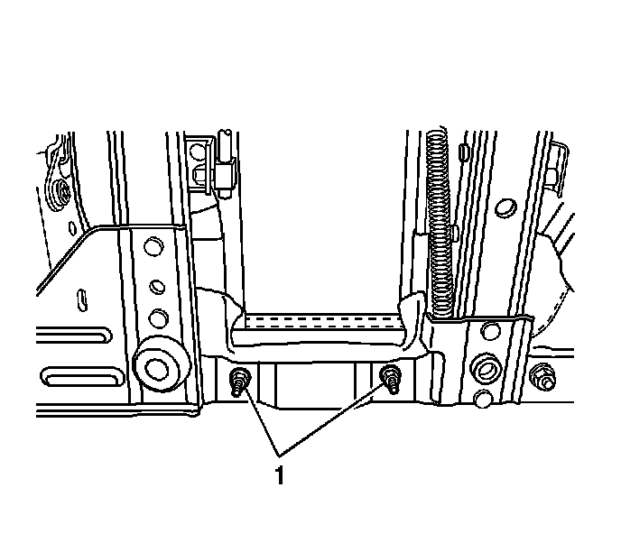
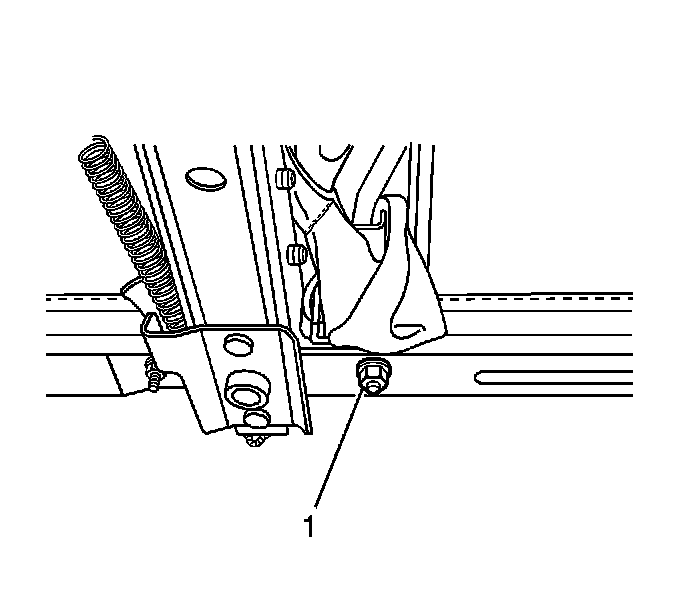
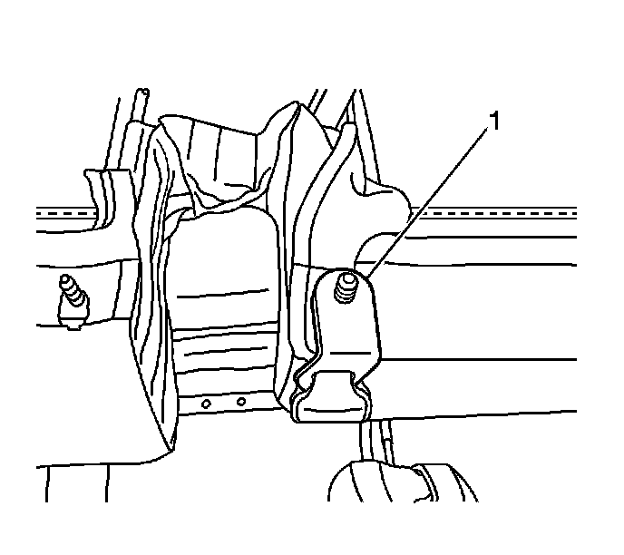
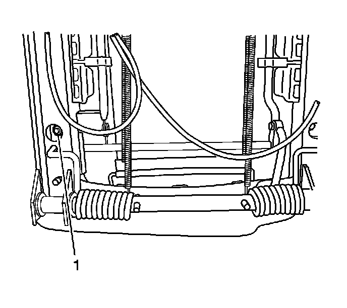

Rear Seat Cushion Replacement - Left Side
Rear Seat Cushion Replacement - Left Side
Removal Procedure
1. Remove the seat from the vehicle. Refer to Rear Seat Replacement (Rear Seat Replacement) .

2. Remove the seat cushion mounting nuts (1) from the seat bottom.

3. Remove the seat belt anchor nut (1) from the seat frame.
4. Remove the seat cushion from the seat.
Installation Procedure

1. Ensure the seat belt mount is in the correct location (1).
2. Install the seat cushion into the seat.

Notice: Refer to Fastener Notice (Fastener Notice) .
3. Install the rear seat cushion nuts (1) securing the seat cushion to the seat frame.
Tighten the nuts to 24 N.m (18 lb ft).
4. Install the seat belt buckle nut (1) securing the seat cushion to the seat frame.
Tighten the seat belt buckle nuts to 42 N.m (31 lb ft).
5. Install the seat in the vehicle. Refer to Rear Seat Replacement (Rear Seat Replacement) .